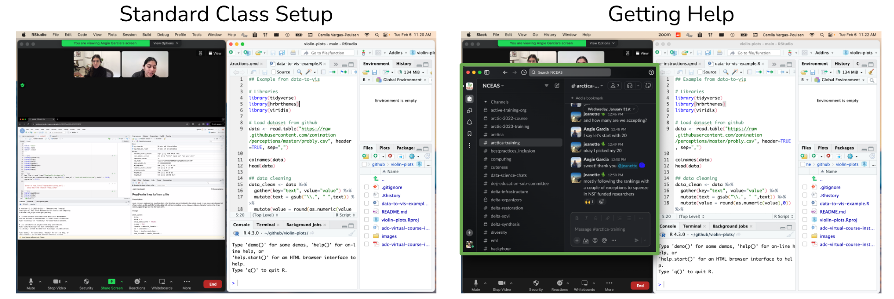
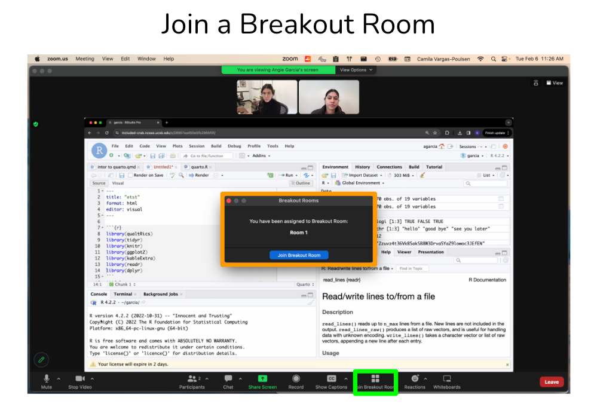

Reproducible Approaches to Arctic Research Using R
February 24-28, 2025


About the course
This 5-day virtual workshop will provide researchers with an overview of reproducible and ethical research practices, steps and methods for more easily documenting and preserving their data at the Arctic Data Center, and an introduction to programming in R. Special attention will be paid to qualitative data management, including practices working with sensitive data. Example datasets will draw from natural and social sciences, and methods for conducting reproducible research will be discussed in the context of both qualitative and quantitative data. Responsible and reproducible data management practices will be discussed as they apply to all aspects of the data life cycle. This includes ethical data collection and data sharing, data sovereignty, and the CARE principles. The CARE principles are guidelines that help ensure open data practices (like the FAIR principles) appropriately engage with Indigenous Peoples’ rights and interests.
Week’s Schedule

Logistics
Server
You should receive a separate email from NCEAS Account Services prompting you to change your password using the NCEAS account service. Please change your password and then ensure that you can log in at https://included-crab.nceas.ucsb.edu/.
Monitors
If you have a second monitor or second device, it would be useful for this training. You’ll need enough screen real estate to handle the primary Zoom window, the participant pane in Zoom, Slack, and a browser with tabs for RStudio and our training curriculum. We recommend either using two monitors or joining the Zoom room from a second device. Having two monitors could look like this:

If you must be on one machine for everything, here’s an example of what it could look like when you are following along with the class and how your screen will shift when you have a more detailed question that requires breakout assistance.

When we’re in session, please turn your camera on and mute your microphone unless you would like to ask a question or contribute to a discussion.
Working from Home
We recognize that working from home may come with challenges. The appearance or sound of other adults, children, and pets in remote meetings such as this is completely normal and understandable. Having your video on and enabling the instructors and your fellow participants to see you brings some humanity to this physically distant workshop, and we believe that this is a crucial element of its success. If you would like to use the Zoom virtual background feature to hide your surroundings, please do so, making sure your background of choice fits within the code of conduct (here are some Arctic-themed backgrounds if you need inspiration).
Non-Verbal Feedback
We’ll be using the Zoom “Non Verbal Feedback” buttons throughout this course. We will ask you to put a green check by your name when you’re all set and ready to move on with the lesson and a red x by your name if you’re stuck or need assistance. These buttons can be found in the participant’s panel of the Zoom room. When you’re asked to answer using these buttons, please ensure that you select one so that the instructor has the feedback that they need to either continue the lesson or pause until everyone gets back on the same page.

Questions and Getting Help
When you need to ask a question, please do so in one of the following ways:
- Turn your mic on and ask. If you are uncomfortable interrupting the instructor, you may also raise your virtual hand (in the participant panel) and the session facilitator will ask the instructor to pause and call upon you.
- Ask your question in the slack channel.
If you have an issue/error and get stuck, you can ask for help in the following ways:
- Turn your mic on and ask for help. See also above regarding the use of a virtual raised hand.
- Let one of the instructors know in the slack channel.
- If prompted to do so, put a red X next to your name as your status in the participant window.
When you have detailed questions or need one on one coding assistance, we will have zoom breakout rooms available with helpers. The helper will try to help you in Slack first. If the issue requires more in-depth troubleshooting, the helper will invite you to join their named Breakout Room.

Once you have been assigned a breakout room, but you don’t see the pop-up shown in the image above, you can click on the “Join Breakout Room” button on the bottom menu and then click on “Join Breakout Room” in the pop-up message.

The Power of Open
To facilitate a lively and interactive learning environment, we’ll be calling on folks to share their code and to answer various questions posed by the instructor. It’s completely okay to say “Pass” or “I Don’t Know” - this is a supportive learning environment and we will all learn from each other. The instructors will be able to see your code as you go to help you if you get stuck, and the lead instructor may share participants’ code to show a successful example or illustrate a teaching moment.
Code of Conduct
By participating in this activity you agree to abide by the NCEAS Code of Conduct.
About this book
These written materials are the result of a continuous and collaborative effort at NCEAS to help researchers make their work more transparent and reproducible. This work began in the early 2000’s, and reflects the expertise and diligence of many, many individuals. The primary authors are listed in the citation below, with additional contributors recognized for their role in developing previous iterations of these or similar materials.
This work is licensed under a Creative Commons Attribution 4.0 International License.
Citation: Matthew B. Jones, S. Jeanette Clark, Nicole Greco, Maggie Klope, Jim Regetz (2025), Reproducible Practices for Arctic Research Using R. Arctic Data Center & NCEAS Learning Hub. doi:10.18739/A2057CV1S. URL https://learning.nceas.ucsb.edu/2025-01-arctic.
Additional contributors: Ben Bolker, Amber E. Budden, Julien Brun, Samantha Csik, Halina Do-Linh, Natasha Haycock-Chavez, S. Jeanette Clark, Julie Lowndes, Stephanie Hampton, Samanta Katz, Erin McLean, Bryce Mecum, Casey O’Hara, Deanna Pennington, Karthik Ram, Jim Regetz, Tracy Teal, Camila Vargas-Poulsen, Daphne Virlar-Knight, Leah Wasser.
This is a Quarto book. To learn more about Quarto books visit https://quarto.org/docs/books.